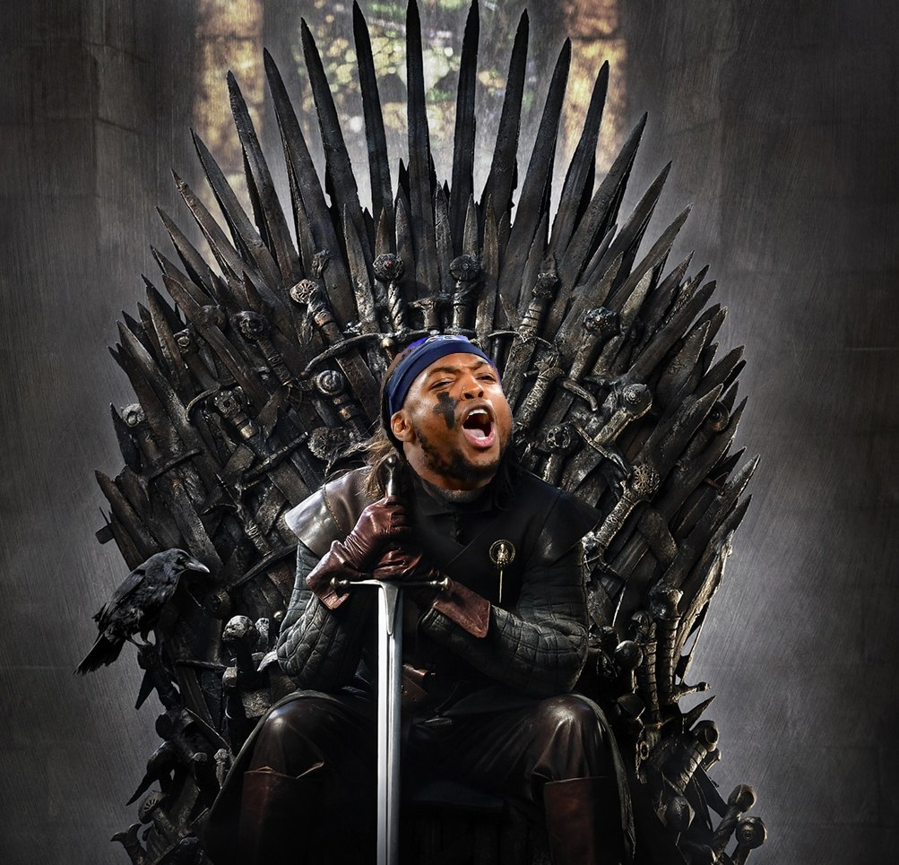
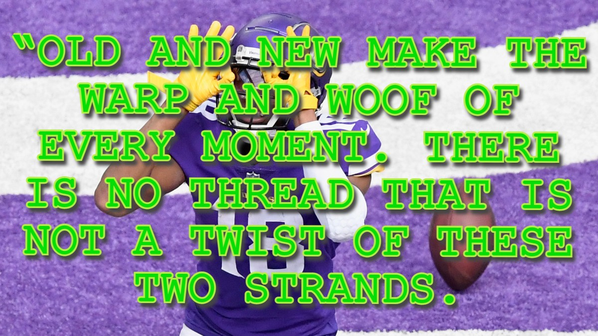
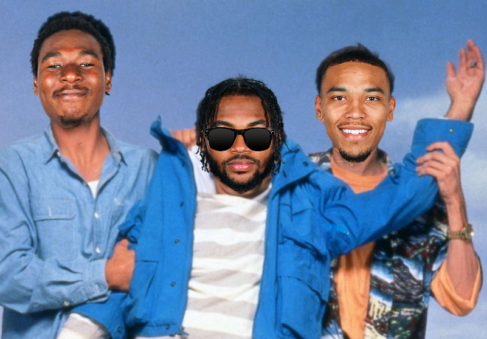

Love, Hardship, Betrayal, Revenge, Justice.
These are the storylines you lust for and bust for.
Game of the Week
A game of thrones. (W6)
Royals clash in this highly anticipated matchup. Both with a strong claim to the throne, the winner gains a leg up in the division as we head towards midseason. Teteo will have to contend with bye weeks for both King Henry and The Sun God. Luckily for him the arrival of Breece Hall’s foretold RB1 potential is here. Hall will have a chance to take revenge on the team that traded him for peanuts in the preseason. Bryan will have his full team available including his own RB surprise in RhamondreSZN. When you play the game of thrones you win or you BYE. 
Out with the old, in with the new. (W5)
A battle of the division’s top dawg and a young upstart looking to build on a strong finish from last week. Bryan will need to count on some solid showings for a few flex plays to keep his crown. 
Weekend at Dre's (W4)
Sam’s beautiful little baby boy Swift is down with injury, time for the backup to shine. Zack rides high after securing a win during a down week for the league. Two titans of the Fallen Angels clash. 
Mike Evanescence (W3)
The ultimate House hater vs the undisputed champion of The House. Time to settle this dispute. Zack catches a break with Mike Evans out, little does he know it will only serve to bring Bryan's team to life.

ROCKY (W2)
He's been beaten, bruised up, and broken. Down but not out, Caleb is looking to rise from the ashes after a harrowing defeat. Coach has his work cut out for him against the highest scoring team from week 1. Will Najee rally to carry the lifeless corpse of Hurst so good :*). Or are we in for a legendary Barkley beatdown.

Predictions
Week 6 Matchups
TETEO VS BRYAN (see game of the week)
Winner: Bryan
KYLER VS JAKE:
Jake riding high on a surging wave of momentum should find little resistance against Kyler’s squad who could be facing an 0-6 start. This one is looking lopsided.
Winner: Jake
SAM VS ANDREW:
What Sam had hoped to be a get right game after last week’s loss could turn out to be the opposite. Sam will be down Swift and Cooks thanks to byes and a few tough matchups for key positions. Andrew is hoping for several players to score above single digits so this could be a low scoring, close affair.
Winner: Sam
JASON VS ZACK:
No longer is this storied rivalry confined to the links. Week 6 places brother against brother. Jason with a suddenly fearsome roster against Zack who needs to right the ship of a previously steady team. This one could get ugly. Not even a GP pizza could settle this bad blood.
Winner: Jason
ETHAN VS CALEB:
Like an old west shootout but both guns misfire and neither man remembered to zip up their fly. Ethan and Caleb are having an up and down season leaning towards dysfunction. Whoever wins would go a long way towards cementing themselves as a respectable institution in this league.
Winner: Ethan
COLT VS JOSH:
We can only hope that Colt is not cruel in his dismantling of Josh this week. It shouldn’t be close.
Winner: Colt
Week 5 Matchups
SAM VS BRYAN (see game of the week)
Winner: Bryan
KYLER VS COLT:
Barely having time to mourn the season ending injury for Javonte, Kyler must steel himself to face a revamped squad for Colt. Turning depth into more depth Colt will have to grapple with which WR1 to play in his flex. Hard to say who has the more difficult matchup between the two.
Winner: Colt
ZACK VS CALEB:
Hoping to put his new toys to work, Caleb will be starting in a hole of his own design projected for 17 less points than Zack to start the week. Hard to see how he climbs out of this one, but maybe digging deeper will be the answer.
Winner: Zack
JOSH VS JAKE:
If you thought that Caleb’s projection gap was bad, then stop reading here because Josh will be starting off with 25 points to make up before the games even kick off. Jake’s continued play of Raheem Mostert began as a question mark, but now seems like a cruel joke.
Winner: Jake
TETEO VS ANDREW:
A comically bad week 4 for Andrew has him on much less steady ground than in recent memory. A great chance to prove that last week was a freak fluke is complicated by Teteo in his way. The Yeti lord is ready to unleash the Sun God back after injury and rumblings that a Breece breakout is possible.
Winner: Teteo
JASON VS ETHAN:
A week of players performing above projections has Jason feeling his oats and back in regular gif spamming form. Ethan is no slouch, however and has a full bladder ready to piss on Jason’s steel cut bravado.
Winner: JASON
Week 4 Matchups
ZACK VS SAM (see game of the week)
Winner: Zack
KYLER VS BRYAN:
The arguably peak underperforming roster this season, helmed by the usually dependable Kyler, heads into week four against a slightly revamped squad headed by Bryan. A tight contest could develop if Kyler’s running back trio decides to show up.
Winner: Bryan
COLT VS CALEB:
A house divided cannot stand. These two former roommates and current Idahoans residents will be avoiding eye contact this whole week as they pass by each other on their beautiful Boise downtown. What a great city.
Winner: Colt
JOSH VS ETHAN:
A new look squad for Josh looks to climb out of the sludge shit pit he has been entombed in, Ethan and Khalil will be tasked with making sure the dead do not rise.
Winner: Ethan
TETEO VS JAKE:
THE team of the season thus far helmed by Teteo squares off against the Jake’s meme team. Has the Yeti truly awakened? How long will Jake be able to start Raheem Mostert before he is forced to pivot? Find out this week!
Winner: Teteo
JASON VS ANDREW:
Jason has waited patiently for Pitts to produce and it paid off last week. A tough task lays ahead of him and his name is Andrew Weber. He owns a large stock of talented football players and he’s ready to unleash them all on top of Mr. Lange’s hopes and dreams. Will Ekeler arrive in time to save the day?
Winner: Andrew
Week 3 Matchups
ZACK VS BRYAN (see game of the week)
Winner: Bryan
KYLER VS CALEB:
The perfect get right game for Kyler against the scarecrow that is Caleb’s fantasy squad. Caleb may have renounced his faith in god after this rough start, but maybe there’s someone a little more sinister that can aid him now…
Winner: Kyler
COLT VS SAM:
Pittman will be back for colt, but his quarterback won’t. We’ll see you on the waiver line. The tenacity of Sam’s fearsome running back duo will be needed after they were only at 50% strength in his squeezer of a win.
Winner: Sam
JAKE VS ETHAN:
Looking to add coal to the fire off the back of last week’s win, Jake will be happy to see the return of Gabe Davis and an upgrade for Julio if he is able to suit up. Ethan will be sending up a prayer that Davante and Chase will decide to show up.
Winner: Jake
TETEO VS JASON:
The Juggernaut has arrived and his name is Teteo. The full strength of this team may not be needed to topple Jason who stands teetering on the edge of this early season.
Winner: Teteo
JOSH VS ANDREW:
Andrew has assembled a lot of wins from the draft this year and comes into this contest with the highest projected point total on the week. Josh is just trying to hold on. This one could be over early.
Winner: Andrew